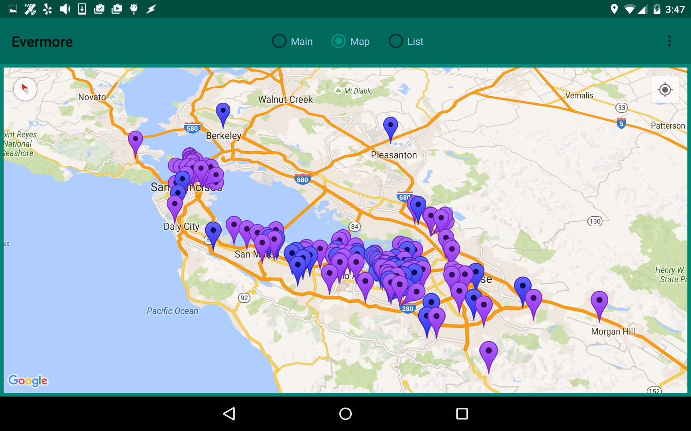

I've tapped the Map radio button at the top of the screen
to git rid of the controls so I can see more of the map.
I also rotated the screen (pressed two fingers on the screen and rotated them about a center point) and then tilted the screen slightly to give it a bit of depth (pressed two fingers on the bottom of the screen and moved them together towards the top of the screen).
Now I can see that I know a few people on the outskirts of the Bay Area as well. It might be worth dropping in on them sometime when I'm headed out of town.